Kalender wählen
-
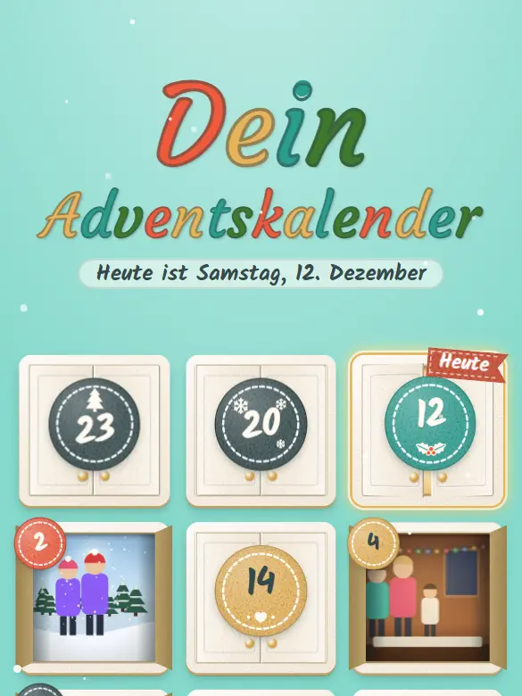
Türchenwand Der Klassiker: 24 Kartontürchen, die aufschwingen – dahinter wartet das Foto des Tages. -
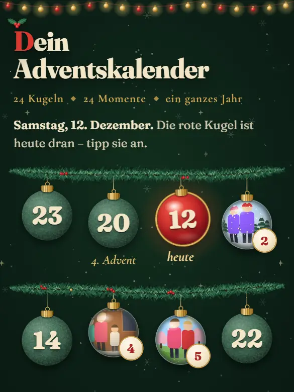
Kugel-Girlanden Tannengirlanden mit 24 Christbaumkugeln. Jede geöffnete Kugel zeigt ihr Foto wie durch gewölbtes Glas. -
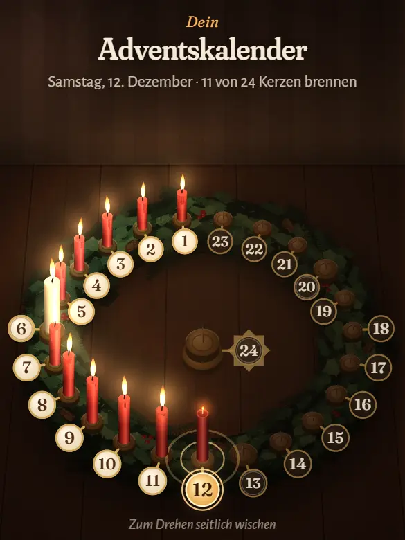
Lichterkranz Ein Adventskranz mit 24 Kerzen: Jeden Tag brennt eine mehr, und der Raum wird heller. -
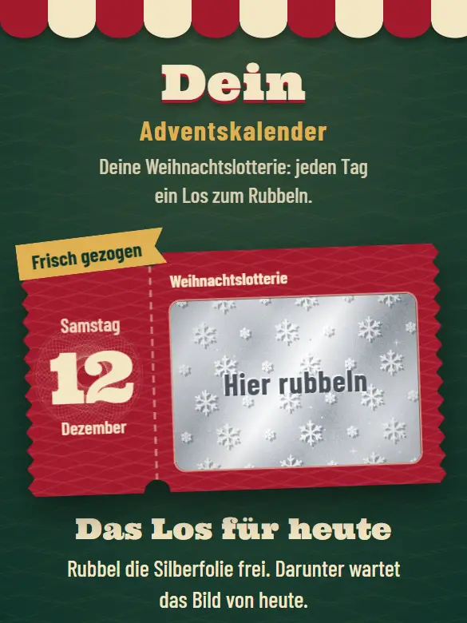
Weihnachtslotterie Jeden Tag ein Rubbellos. Mit dem Finger die Silberfolie freirubbeln, darunter liegt das Foto. -
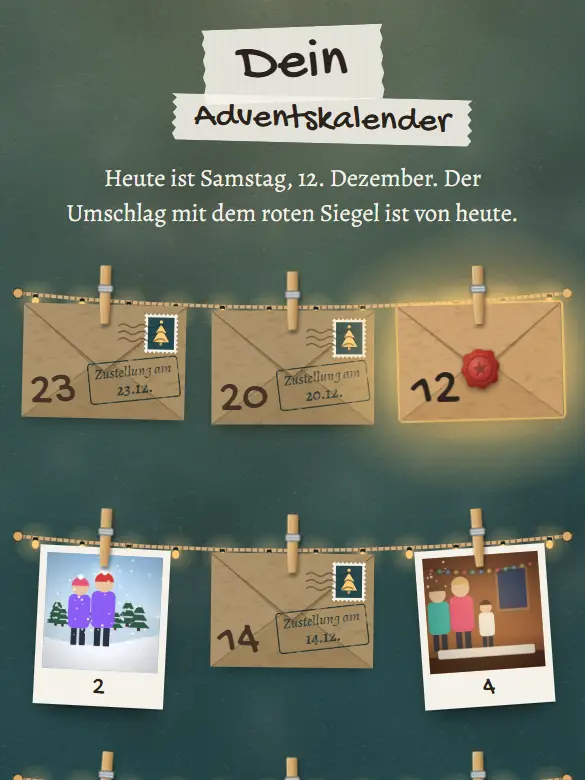
Fotoleine Briefumschläge an der Lichterkette – darin ein Sofortbild, das sich vor deinen Augen entwickelt. -
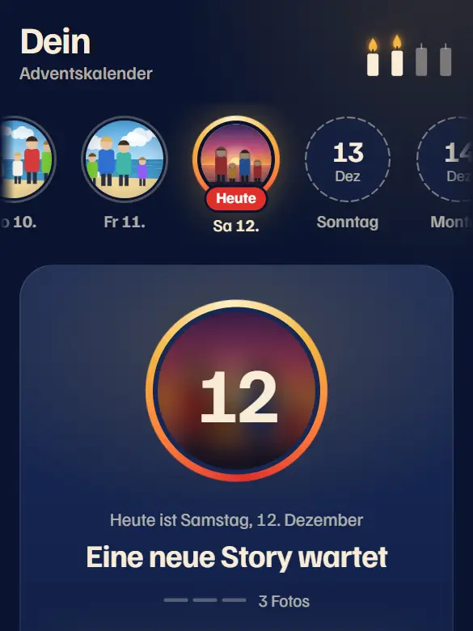
Advent-Stories Jeder Tag ist eine kleine Story aus mehreren Fotos, durchgetippt wie am Handy. -
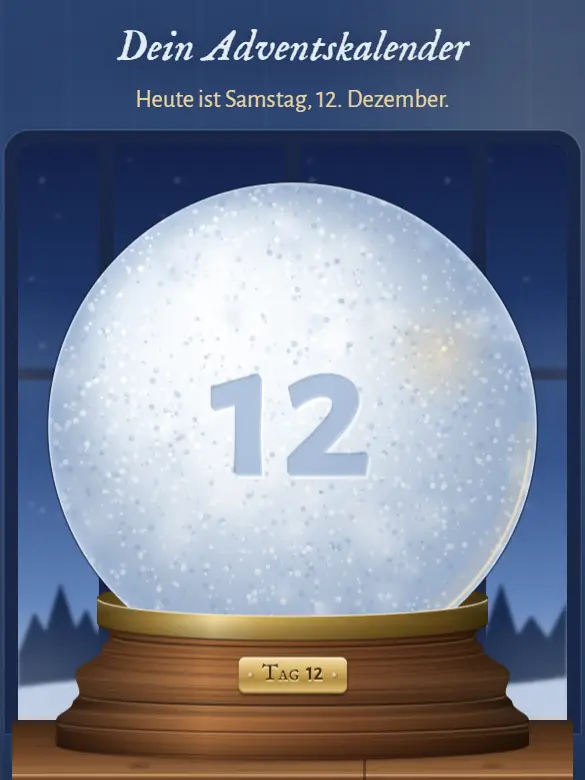
Schneekugel Schütteln, bis der Schnee sich legt – dann taucht das Foto in der Kugel auf. -
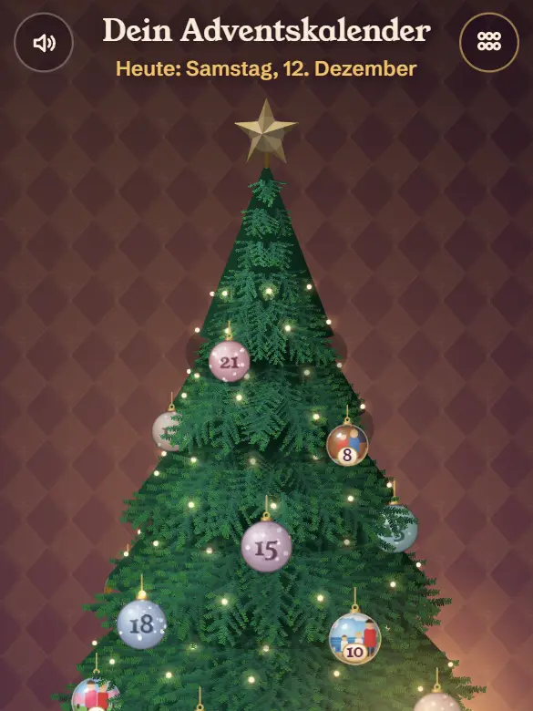
Drehbaum Einen Tannenbaum in 3D mit dem Finger drehen, bis die leuchtende Kugel des Tages auftaucht. -
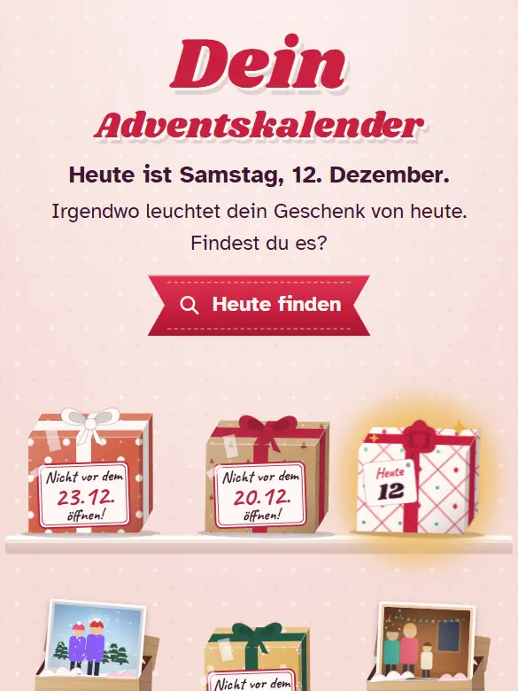
Geschenke auspacken Schleife aufziehen, Papier aufreißen – und das Foto steigt mit Konfetti aus der Schachtel. -
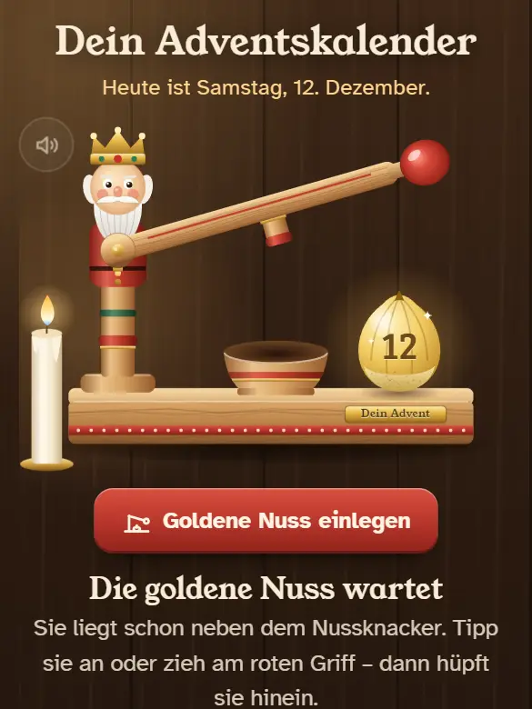
Nussknacker Jeden Tag eine goldene Nuss: am Hebel ziehen, bis sie knackt und ein Foto herausrollt. -
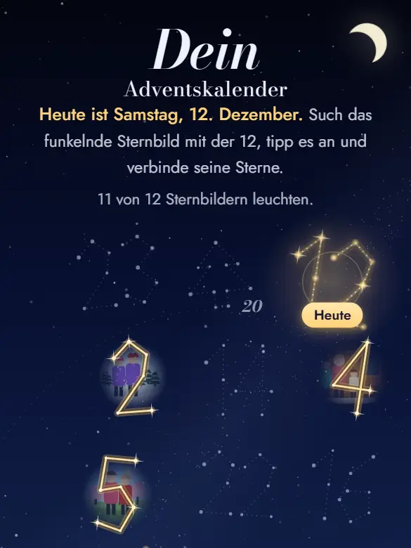
Sternbilder Die nummerierten Sterne mit dem Finger verbinden, bis das Sternbild leuchtet und das Foto zeigt. -
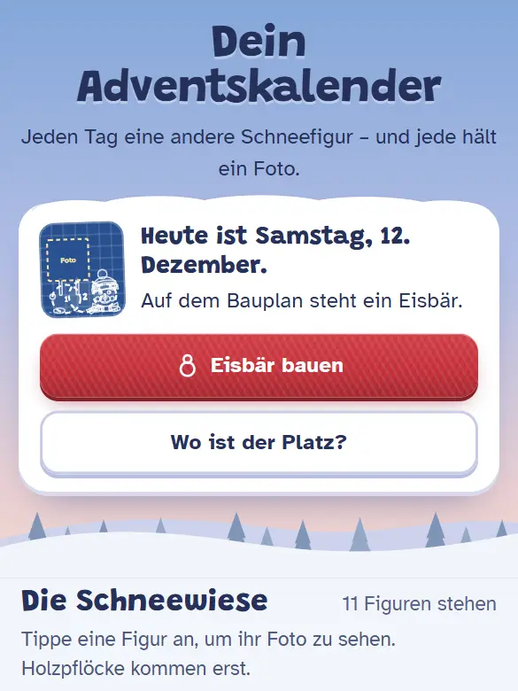
Schneefiguren bauen Jeden Tag eine andere Figur aus Schneekugeln rollen – aber Vorsicht vor warmen Stellen. Die fertige Figur hält das Foto.